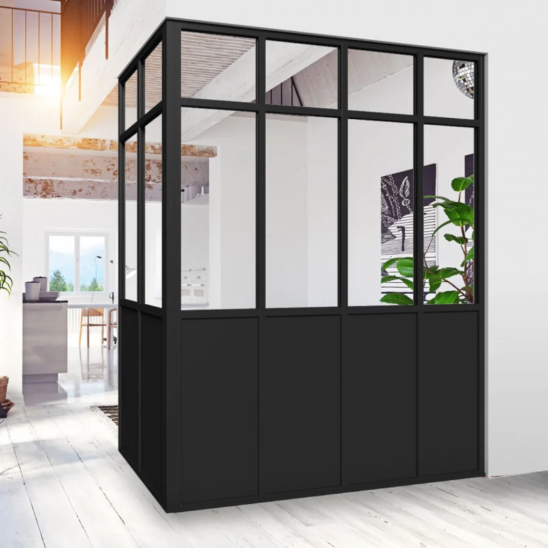
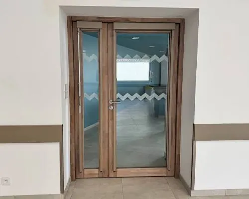
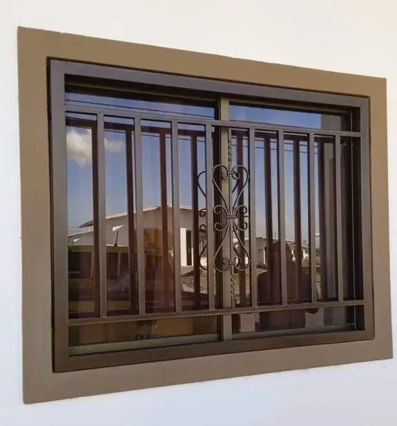
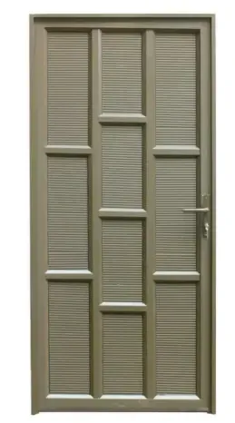
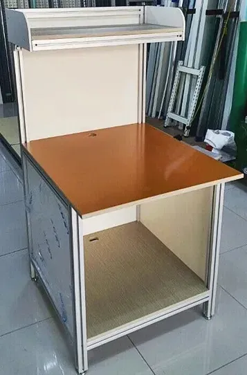
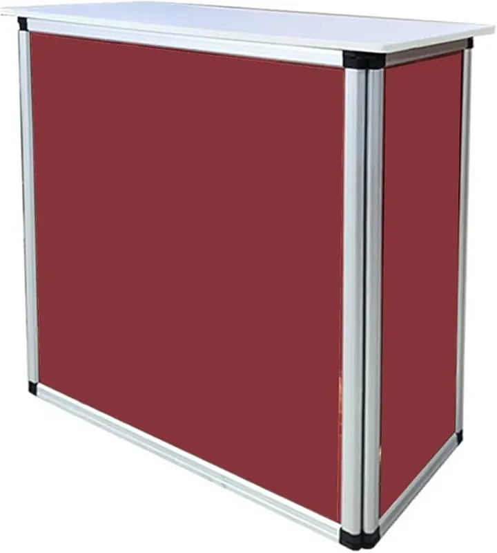

Pose de vitres sur chantier
Nous venons sur place : mesures, découpe, pose et finitions silicone, sur chantier neuf ou rénovation.
 Baie coulissante à 3 ouvrants
Baie coulissante à 3 ouvrants Porte avec grille de protection
Porte avec grille de protection
Cloison verrière noire Porte vitrée double battant
Porte vitrée double battantVitrerie Belleville Inox · Bobo-Dioulasso
Fabrication et pose par HEMA B Souleymane, à Belleville.










Nous venons sur place : mesures, découpe, pose et finitions silicone, sur chantier neuf ou rénovation.
Verre trempé ou feuilleté, cadres aluminium ou inox, quincaillerie robuste adaptée au climat.
Baies vitrées, cloisons, vérandas : de la lumière en plus, de la chaleur en moins.
Fabriquées sur mesure dans notre atelier pour boutiques, salons et maisons.
Plateaux en verre trempé, pieds en inox poli ou brossé, finitions soignées.
Garde-corps, rampes, structures : soudure propre et résistance dans le temps.
Miroirs muraux, vitrines commerciales, enseignes vitrées taillés à vos dimensions.
Baie vitrée posée en une journée, finitions très propres. L’équipe a respecté les délais.
Ma vitrine et mes armoires vitrées sont impeccables. Le devis était clair et le prix honnête.
Nous travaillons avec eux sur nos chantiers : sérieux, ponctuels, et le garde-corps inox est solide.
Vous avez travaillé avec nous ? Laissez-nous un avis sur WhatsApp
Fondateur de Vitrerie Belleville Inox, HEMA B Souleymane dirige l’atelier installé à Belleville, à Bobo-Dioulasso. Il suit chaque projet de bout en bout : prise de mesures sur place, devis, fabrication à l’atelier, puis pose.
Avec plus de dix ans de métier dans le verre, l’aluminium et l’inox, il reste votre interlocuteur direct pour les particuliers, les commerçants et les entreprises du bâtiment, du premier contact jusqu’à la fin du chantier.
L’atelier de HEMA B Souleymane est installé à Belleville, à 100 mètres du commissariat. Depuis plus de dix ans, nous coupons, assemblons et posons du verre pour les particuliers, les commerçants et les entreprises du bâtiment.
Chaque pièce est mesurée sur place, fabriquée à la main et posée par nos équipes. Un devis honnête, un délai tenu, un chantier laissé propre.
Envoyez-nous vos dimensions ou une photo, nous répondons rapidement.
Nous contacter